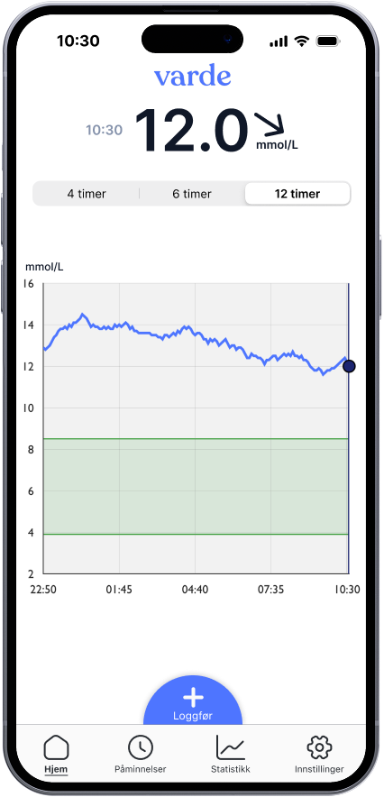
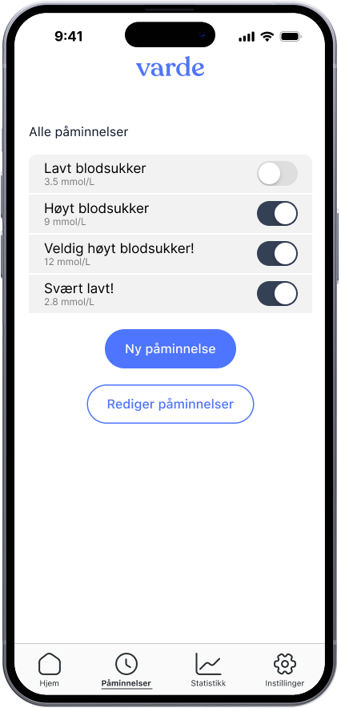
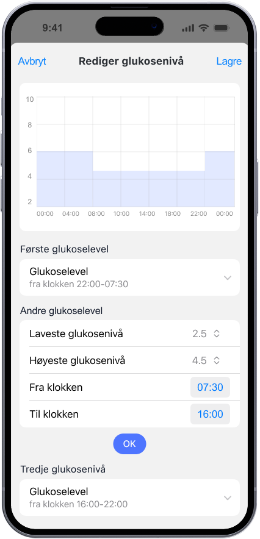
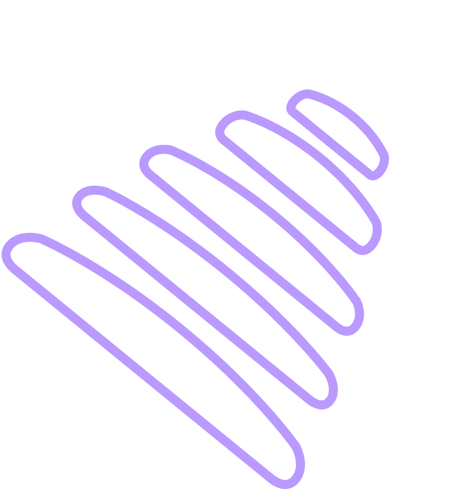

Hva er
T0?
Varde T0 er en smart løsning for deg som lever med diabetes og ønsker bedre kontroll over glukosenivået.
Ved å koble til eksisterende sensorer gir systemet sanntidsavlesning av glukosenivå, med mulighet for egne varsler samt automatisk varsling ved raske endringer. Varde gir deg verdifull innsikt ved å visualisere glukosedata, aktivitetsnivå og insulinbruk – enkelt, trygt og alltid tilgjengelig.
T0 er første versjon av appen vår, som vi planlegger å lansere rundt sommeren 2025. Vi er også i prosessen med å få CE-merket som en SWMD i henhold til MDR som et Class I produkt.
Hvordan det fungerer

1.
Oversikt
Diabetes krever oppmerksomhet. Derfor vil vi gjøre det enklere gjennom sanntidsavlesningen av glukoseverdier. Du kan også navigere tilbake i tid for å se tidligere glukosenivåer.
2.
Varsler
Alle håndterer diabetes på forskjellige måter. Varde lar deg bestemme når og hvilke varsler som skal være aktive.


3.
Kontroll
Dette er bare noen av funksjonene som gjør Varde til ditt personlige verktøy. Varde T0 skal være en applikasjon som er tilpasset den enkeltes behov. Fra valg av varsler, samt hvordan du ser på dataen, Varde ønsker å gi kontroll til brukeren.
